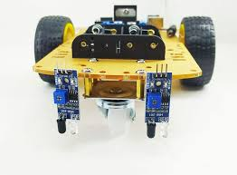
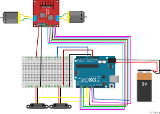

Sobre o Projeto
Nosso robô seguidor de linha foi desenvolvido para detectar e seguir trajetos definidos por faixas brancas sobre superfícies escuras. Ele utiliza sensores infravermelhos, motores DC e uma estrutura leve para garantir precisão e velocidade.
üî© Componentes Utilizados
- 3 Sensores infravermelhos
- 2 Motores DC
- 1 Placa Arduino Uno
- 1 Ponte H L298N
- Chassi com rodas
- 2 Baterias 9V
⚙️ Funcionamento
Os sensores IR detectam a linha branca no chão. Quando o robô se desvia, os sensores enviam sinais para o Arduino, que ajusta os motores para corrigir a rota. A ponte H controla a direção e velocidade dos motores.
üì∏ Galeria de Fotos

